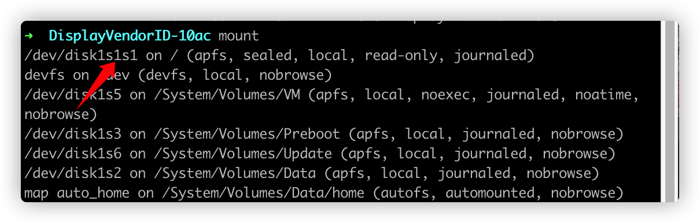

<!DOCTYPE html><html lang="zh-CN" data-default-color-scheme="&#34;auto&#34;"><head><meta charset="UTF-8"><link rel="apple-touch-icon" sizes="76x76" href="/img/favicon.png"><link rel="icon" type="image/png" href="/img/favicon.jpg"><meta name="viewport" content="width=device-width,initial-scale=1,maximum-scale=1,user-scalable=no,shrink-to-fit=no"><meta http-equiv="x-ua-compatible" content="ie=edge"><meta name="theme-color" content="#2f4154"><meta name="description" content=""><meta name="author" content="Lion"><meta name="keywords" content=""><title>为macOS bigsur开启HiDpi - Mmmmmmmmmmat</title><link rel="stylesheet" href="https://cdn.staticfile.org/twitter-bootstrap/4.4.1/css/bootstrap.min.css"><link rel="stylesheet" href="https://cdn.staticfile.org/github-markdown-css/4.0.0/github-markdown.min.css"><link rel="stylesheet" href="/lib/hint/hint.min.css"><link rel="stylesheet" href="https://cdn.staticfile.org/highlight.js/10.0.0/styles/github-gist.min.css"><link rel="stylesheet" href="https://cdn.staticfile.org/gitalk/1.6.2/gitalk.css"><link rel="stylesheet" href="//at.alicdn.com/t/font_1749284_pf9vaxs7x7b.css"><link rel="stylesheet" href="//at.alicdn.com/t/font_1736178_kmeydafke9r.css"><link rel="stylesheet" href="/css/main.css"><script src="/js/utils.js"></script><script src="/js/color-schema.js"></script><meta name="generator" content="Hexo 5.2.0"></head><body><header style="height:70vh"><nav id="navbar" class="navbar fixed-top navbar-expand-lg navbar-dark scrolling-navbar"><div class="container"><a class="navbar-brand" href="/">&nbsp;<strong>Mao's mmmmmmat</strong>&nbsp;</a> <button id="navbar-toggler-btn" class="navbar-toggler" type="button" data-toggle="collapse" data-target="#navbarSupportedContent" aria-controls="navbarSupportedContent" aria-expanded="false" aria-label="Toggle navigation"><div class="animated-icon"><span></span><span></span><span></span></div></button><div class="collapse navbar-collapse" id="navbarSupportedContent"><ul class="navbar-nav ml-auto text-center"><li class="nav-item"><a class="nav-link" href="/"><i class="iconfont icon-home-fill"></i> 首页</a></li><li class="nav-item"><a class="nav-link" href="/archives/"><i class="iconfont icon-archive-fill"></i> 归档</a></li><li class="nav-item"><a class="nav-link" href="/categories/"><i class="iconfont icon-category-fill"></i> 分类</a></li><li class="nav-item"><a class="nav-link" href="/tags/"><i class="iconfont icon-tags-fill"></i> 标签</a></li><li class="nav-item"><a class="nav-link" href="/about/"><i class="iconfont icon-user-fill"></i> 关于</a></li><li class="nav-item" id="search-btn"><a class="nav-link" data-toggle="modal" data-target="#modalSearch">&nbsp;<i class="iconfont icon-search"></i>&nbsp;</a></li><li class="nav-item" id="color-toggle-btn"><a class="nav-link" href="javascript:">&nbsp;<i class="iconfont icon-dark" id="color-toggle-icon"></i>&nbsp;</a></li></ul></div></div></nav><div class="banner intro-2" id="background" parallax="true" style="background:url(/img/banner/dandelion.jpg) no-repeat center center;background-size:cover"><div class="full-bg-img"><div class="mask flex-center" style="background-color:rgba(0,0,0,.3)"><div class="container page-header text-center fade-in-up"><span class="h2" id="subtitle"></span><div class="mt-3"><span class="post-meta"><i class="iconfont icon-date-fill" aria-hidden="true"></i> <time datetime="2020-11-23 12:01" pubdate>2020年11月23日 中午</time></span></div><div class="mt-1"><span class="post-meta mr-2"><i class="iconfont icon-chart"></i> 332 字 </span><span class="post-meta mr-2"><i class="iconfont icon-clock-fill"></i> 3 分钟 </span><span id="leancloud-post-views-container" class="post-meta" style="display:none"><i class="iconfont icon-eye" aria-hidden="true"></i> <span id="leancloud-post-views"></span> 次</span></div></div></div></div></div></header><main><div class="container-fluid"><div class="row"><div class="d-none d-lg-block col-lg-2"></div><div class="col-lg-8 nopadding-md"><div class="container nopadding-md" id="board-ctn"><div class="py-5" id="board"><article class="post-content mx-auto" id="post"><h1 style="display:none">为macOS bigsur开启HiDpi</h1><div class="markdown-body" id="post-body"><h2 id="参考文档"><a href="#参考文档" class="headerlink" title="参考文档"></a>参考文档</h2><ol><li><a target="_blank" rel="noopener" href="https://sspai.com/post/57549">为 macOS 10.15 开启 HiDPI，让 2K 显示器更舒适</a></li><li><a target="_blank" rel="noopener" href="https://comsysto.github.io/Display-Override-PropertyList-File-Parser-and-Generator-with-HiDPI-Support-For-Scaled-Resolutions/">SCALED RESOLUTIONS<br>for your MacBooks external Monitor</a></li><li><a target="_blank" rel="noopener" href="https://apple.stackexchange.com/a/395509">Mount root as writable in Big Sur</a></li></ol><h2 id="前言"><a href="#前言" class="headerlink" title="前言"></a>前言</h2><p>本文适合有一定基础的人～最好有一定的英语阅读能力&amp;基本的shell知识</p><h2 id="操作步骤"><a href="#操作步骤" class="headerlink" title="操作步骤"></a>操作步骤</h2><p>先按参考文档1的步骤，进行到<code>复制 plist 配置文件到系统配置目录</code>这一步时，就走不通了，因为在Big Sur中，苹果对于权限要求更严格，要通过额外的一系列操作才能获取根目录的写入权限了（参看文档3）。</p><p>大概解释一下文档3的意思：</p><ol><li>在恢复模式终端运行<code>csrutil authenticated-root disable</code>(与文档1中<code>csrutil disable</code>方法类似)</li><li>重启回系统，终端运行<code>mount</code>，如图所示<br>则<code>DISK_PATH</code>为<code>/dev/disk1s1</code>（把最后的s+数字去掉）</li><li>随便创建一个挂载的目录，文中路径为<code>~/mount</code>，即为<code>MOUNT_PATH</code></li><li>运行<code>sudo mount -o nobrowse -t apfs DISK_PATH MOUNT_PATH</code>（用上文的变量替换）</li><li>现在就可以在<code>~/mount</code>下修改系统文件了，如：要修改<code>/temp/1.txt</code>的文件，则应修改<code>~/mount/temp/1.txt</code></li><li>修改完成之后，运行<code>sudo bless --folder MOUNT_PATH/System/Library/CoreServices --bootefi --create-snapshot</code>（注意替换路径）</li><li>重启，修改即生效。下面就可以愉快地打开rdm修改分辨率了～</li></ol></div><hr><div><div class="post-metas mb-3"></div><p class="note note-warning">本博客所有文章除特别声明外，均采用 <a target="_blank" href="https://creativecommons.org/licenses/by-sa/4.0/deed.zh" rel="nofollow noopener noopener">CC BY-SA 4.0 协议</a> ，转载请注明出处！</p><div class="post-prevnext row"><article class="post-prev col-6"><a href="/2020/12/18/lodash-debounce/"><i class="iconfont icon-arrowleft"></i> <span class="hidden-mobile">lodash-debounce</span> <span class="visible-mobile">上一篇</span></a></article><article class="post-next col-6"><a href="/2020/11/23/hello-world/"><span class="hidden-mobile">Hello World</span> <span class="visible-mobile">下一篇</span> <i class="iconfont icon-arrowright"></i></a></article></div></div><article class="comments" id="comments"><div id="gitalk-container"></div><script type="text/javascript">function loadGitalk(){addScript("https://cdn.staticfile.org/blueimp-md5/2.13.0/js/md5.min.js"),addScript("https://cdn.staticfile.org/gitalk/1.6.2/gitalk.min.js",(function(){new Gitalk({clientID:"61072849519388e38857",clientSecret:"5df97fe6a12f61c2eea08b5bfb16173824c2a667",repo:"marshcat0.github.io",owner:"marshcat0",admin:["marshcat0"],id:md5(location.pathname),language:"zh-CN",labels:["Gitalk"],perPage:10,pagerDirection:"last",createIssueManually:!0,distractionFreeMode:!1}).render("gitalk-container")}))}waitElementVisible("gitalk-container",loadGitalk)</script></article></article></div></div></div><div class="d-none d-lg-block col-lg-2 toc-container" id="toc-ctn"><div id="toc"><p class="toc-header"><i class="iconfont icon-list"></i>&nbsp;目录</p><div id="tocbot"></div></div></div></div></div></main><a id="scroll-top-button" href="#" role="button"><i class="iconfont icon-arrowup" aria-hidden="true"></i></a><div class="modal fade" id="modalSearch" tabindex="-1" role="dialog" aria-labelledby="ModalLabel" aria-hidden="true"><div class="modal-dialog modal-dialog-scrollable modal-lg" role="document"><div class="modal-content"><div class="modal-header text-center"><h4 class="modal-title w-100 font-weight-bold">搜索</h4><button type="button" id="local-search-close" class="close" data-dismiss="modal" aria-label="Close"><span aria-hidden="true">&times;</span></button></div><div class="modal-body mx-3"><div class="md-form mb-5"><input type="text" id="local-search-input" class="form-control validate"> <label data-error="x" data-success="v" for="local-search-input">关键词</label></div><div class="list-group" id="local-search-result"></div></div></div></div></div><footer class="mt-5"><div class="text-center py-3"><div><a href="https://hexo.io" target="_blank" rel="nofollow noopener"><span>Hexo</span></a> <i class="iconfont icon-love"></i> <a href="https://github.com/fluid-dev/hexo-theme-fluid" target="_blank" rel="nofollow noopener"><span>Fluid</span></a></div><div class="statistics"><span id="leancloud-site-pv-container" style="display:none">总访问量 <span id="leancloud-site-pv"></span> 次 </span><span id="leancloud-site-uv-container" style="display:none">总访客数 <span id="leancloud-site-uv"></span> 人</span></div></div></footer><script src="https://cdn.staticfile.org/jquery/3.4.1/jquery.min.js"></script><script src="https://cdn.staticfile.org/twitter-bootstrap/4.4.1/js/bootstrap.min.js"></script><script src="/js/debouncer.js"></script><script src="/js/main.js"></script><script src="/js/lazyload.js"></script><script defer src="https://cdn.staticfile.org/clipboard.js/2.0.6/clipboard.min.js"></script><script src="/js/clipboard-use.js"></script><script defer>!function(){function e(e,t){return new Promise((function(o,n){e("get","/classes/Counter?where="+encodeURIComponent(JSON.stringify({target:t}))).then(e=>e.json()).then(({results:r,code:i,error:s})=>{if(401===i)throw s;if(r&&r.length>0){var c=r[0];o(c)}else e("post","/classes/Counter",{target:t,time:0}).then(e=>e.json()).then((e,t)=>{if(t)throw t;o(e)}).catch(e=>{console.error("Failed to create",e),n(e)})}).catch(e=>{console.error("LeanCloud Counter Error:",e),n(e)})}))}function t(e){return{method:"PUT",path:"/1.1/classes/Counter/"+e,body:{time:{__op:"Increment",amount:1}}}}function o(o){var n="localhost"!==window.location.hostname,r=[],i=[],s=document.querySelector("#leancloud-site-pv-container");if(s||n){var c=e(o,"site-pv").then(e=>{i.push(t(e.objectId));var o=document.querySelector("#leancloud-site-pv");o&&(o.innerText=e.time+1,s&&(s.style.display="inline"))});r.push(c)}var a=document.querySelector("#leancloud-site-uv-container");if(a||n){var l=e(o,"site-uv").then(e=>{var o,n,r=(o="LeanCloud_UV_Flag",!((n=localStorage.getItem(o))&&(new Date).getTime()-parseInt(n)<=864e5||(localStorage.setItem(o,(new Date).getTime().toString()),0)));r&&i.push(t(e.objectId));var s=document.querySelector("#leancloud-site-uv");s&&(s.innerText=e.time+(r?1:0),a&&(a.style.display="inline"))});r.push(l)}var u=document.querySelector("#leancloud-post-views-container");if(u||n){var h=decodeURI("/2020/11/23/bigSur-hidpi/"),d=e(o,h).then(e=>{if(i.push(t(e.objectId)),u){var o=document.querySelector("#leancloud-post-views");o&&(o.innerText=(e.time||0)+1,u.style.display="inline")}});r.push(d)}n&&Promise.all(r).then(()=>{i.length>0&&function(e,t){new Promise((function(o,n){e("post","/batch",{requests:t}).then(e=>{if((e=e.json()).error)throw e.error;o(e)}).catch(e=>{console.error("Failed to save visitor count",e),n(e)})}))}(o,i)})}var n="tghWQQTQumISSoGrrFaRnDrR-gzGzoHsz";function r(e){o((t,o,r)=>fetch(`${e}/1.1${o}`,{method:t,headers:{"X-LC-Id":n,"X-LC-Key":"48P86SMSbOo6qyqvQD5SU3DW","Content-Type":"application/json"},body:JSON.stringify(r)}))}var i="-MdYXbMMI"!==n.slice(-9)?"https://tghwqqtq.lc-cn-n1-shared.com":`https://${n.slice(0,8).toLowerCase()}.api.lncldglobal.com`;i?r(i):fetch("https://app-router.leancloud.cn/2/route?appId="+n).then(e=>e.json()).then(({api_server:e})=>{r("https://"+e)})}()</script><script src="https://cdn.staticfile.org/tocbot/4.11.1/tocbot.min.js"></script><script>$(document).ready((function(){var t=$("#board-ctn").offset().top;tocbot.init({tocSelector:"#tocbot",contentSelector:"#post-body",headingSelector:"h1,h2,h3,h4,h5,h6",linkClass:"tocbot-link",activeLinkClass:"tocbot-active-link",listClass:"tocbot-list",isCollapsedClass:"tocbot-is-collapsed",collapsibleClass:"tocbot-is-collapsible",collapseDepth:0,scrollSmooth:!0,headingsOffset:-t}),$(".toc-list-item").length>0&&$("#toc").css("visibility","visible")}))</script><script src="https://cdn.staticfile.org/typed.js/2.0.11/typed.min.js"></script><script>var typed=new Typed("#subtitle",{strings:["  ","为macOS bigsur开启HiDpi&nbsp;"],cursorChar:"_",typeSpeed:70,loop:!1});typed.stop(),$(document).ready((function(){$(".typed-cursor").addClass("h2"),typed.start()}))</script><script src="https://cdn.staticfile.org/anchor-js/4.2.2/anchor.min.js"></script><script>anchors.options={placement:"right",visible:"hover"};var el="h1,h2,h3,h4,h5,h6".split(","),res=[];for(item of el)res.push(".markdown-body > "+item);anchors.add(res.join(", "))</script><script src="/js/local-search.js"></script><script>var path="/local-search.xml",inputArea=document.querySelector("#local-search-input");inputArea.onclick=function(){searchFunc(path,"local-search-input","local-search-result"),this.onclick=null}</script><script src="https://cdn.staticfile.org/fancybox/3.5.7/jquery.fancybox.min.js"></script><link rel="stylesheet" href="https://cdn.staticfile.org/fancybox/3.5.7/jquery.fancybox.min.css"><script>$("#post img:not(.no-zoom img, img[no-zoom]), img[zoom]").each((function(){var t=document.createElement("a");$(t).attr("data-fancybox","images"),$(t).attr("href",$(this).attr("src")),$(this).wrap(t)}))</script><script defer>var _hmt=_hmt||[];!function(){var e=document.createElement("script");e.src="https://hm.baidu.com/hm.js?ce297bc9e3387a9e31de461602252cd7";var t=document.getElementsByTagName("script")[0];t.parentNode.insertBefore(e,t)}()</script></body></html>